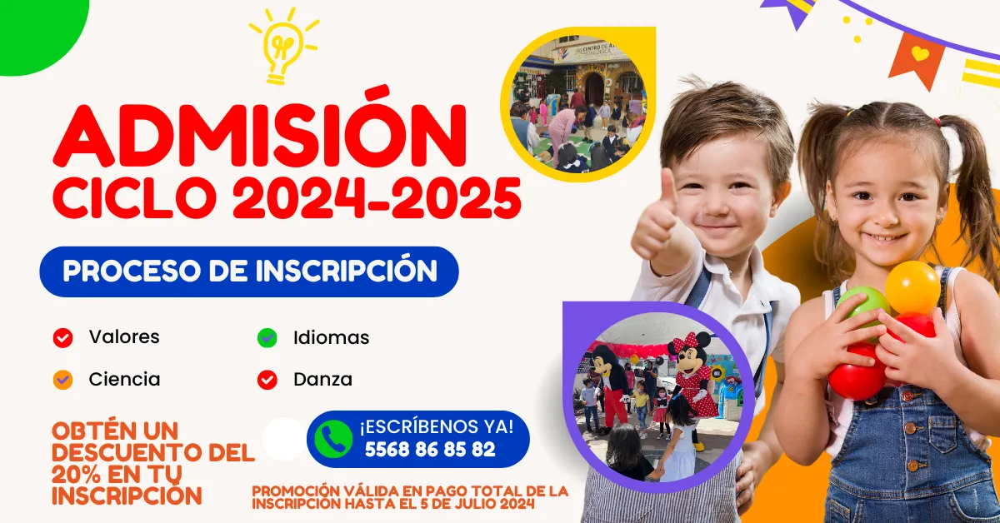
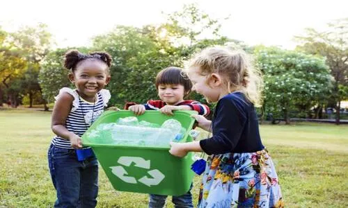
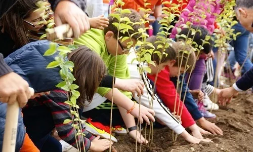
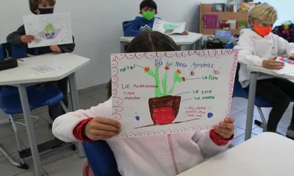
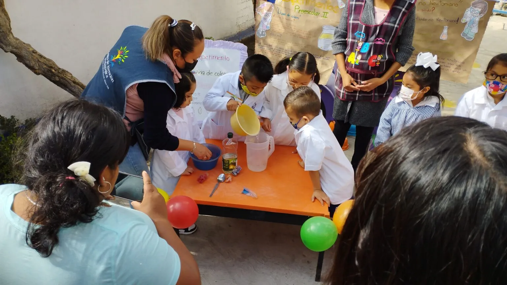
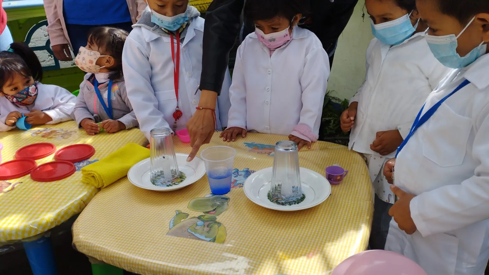

Admisión Ciclo Escolar
2024 - 2025

Fomentamos El Cuidado
Al Medio Ambiente
El cuidado del medio ambiente en la edad preescolar es fundamental para desarrollar una conciencia ambiental, promover valores de responsabilidad y empatía, adquirir habilidades prácticas, mantener una conexión con la naturaleza y fomentar la sostenibilidad futura.
Al invertir en la educación ambiental desde una edad temprana, sentamos las bases para un futuro más sostenible y consciente con el entorno natural.




Nuestros Peques y La Ciencia
La ciencia en el preescolar es importante para el desarrollo de los niños y su comprensión del mundo. Aunque a esta edad los conceptos científicos complejos pueden resultar difíciles, se pueden introducir a los niños a la metodología científica y fomentar su curiosidad.
Las actividades científicas en el preescolar son lúdicas y prácticas, permitiendo a los niños explorar y descubrir diferentes fenómenos naturales.

